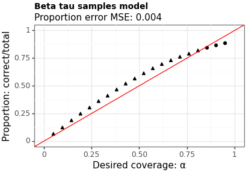

AANN 14/03/2024
Table of Contents
Another look at SQR
Overview
In this example we will use the simultaneous quantile regression (SQR) as proposed by Tagasovska and Lopez-Paz (2019) to compute the quantiles of a prediction. Equation (1) of their paper poses SQR as an optimisation problem with the following (pinball) loss function:
\[ \hat{f} = \text{argmin}_{f} \frac{1}{n} \sum_{i=1}^{n} \mathbb{E}_{\tau\sim\text{U}(0,1)} \ell_{\tau}(f(x_i,\tau),y_{i}). \]
We have done this in a previous post, but here we will focus on one particular aspect of the training process: the distribution of \(\tau\) used during training. In the paper, they do not explain the choice of the uniform distribution of \(\tau\), but do point out that you want something that minimises over all the quantiles.
In practise, I have found this can lead to a model that struggles with the estimation of the \(95\%\) confidence interval. I suspect this is because the optimisation process does not see enough values of \(\tau\) near \(0\) and \(1\) to properly learn the tails. In this example we look at what happens when you swap the uniform out for a \(\text{Beta}(1/2, 1/2)\) distribution. There is no particularly good reason for this, I suspect any symmetric beta distribution with parameters less than one would suffice, but \(1/2\) is a notable because of the Jeffreys prior.
Building off of the structure from the previous post, this example shows that switching to a beta distribution for \(\tau\) leads to a lower MSE for the point predictions (which isn't as exciting as it seems) and noticably more conservative intervals.
The full script with all the code is here.
Model and loss function
See the previous post for details of the model and loss function.
class LocationNB(nn.Module): def __init__(self, m): super(LocationNB, self).__init__() self._m = m # dataset size: {z_1,...,z_m} self._num_S = 3 # number of summary statistics self._q = 10 # latent dimension self._p = 1 # output dimension self._phi = nn.Sequential( nn.Linear(self._num_S + 1, self._q), nn.Sigmoid(), nn.Linear(self._q, self._q), nn.Sigmoid(), nn.Linear(self._q, self._p), ) def signed_sqrt(self, x): return torch.sign(x) * torch.sqrt(torch.abs(x)) def forward(self, x, tau): s0 = torch.median(x, dim=1).values s1 = torch.mean(x, dim=1) s2 = torch.mean(x**2, dim=1) tmp = torch.stack([s0, s1, s2], dim=1) tmp = self.signed_sqrt(tmp) tmp = torch.cat([tmp, tau.unsqueeze(1)], dim=1) return self._phi(tmp).squeeze(1)
class PinballLoss(nn.Module): def __init__(self): super(PinballLoss, self).__init__() def forward(self, predictions, targets, tau): err = targets - predictions loss = torch.where(err >= 0, tau * err, (tau - 1) * err) return torch.mean(loss)
Training
The training process is pretty standard and was previously covered so I won't go into detail beyond pointing out that we run each step of the training we simulate a new data set and new \(\tau\) from either the \(\text{Uniform}(0,1)\) or \(\text{Beta}(1/2,1/2)\) distributions.
There are a lot of functions used here, they are provided in the section below.
Training loop
def train_model(model, tau_dist, num_steps, train_data_gen): optimizer = optim.Adam(model.parameters(), lr=1e-3) loss_function = PinballLoss() model.train() loss_history = [] for step in range(num_steps): train_y, train_x = train_data_gen() train_tau = tau_dist.sample(sample_shape=train_y.shape).squeeze(1) preds = model(train_x, train_tau) loss = loss_function(preds, train_y, train_tau) step_loss = loss.item() optimizer.zero_grad() loss.backward() optimizer.step() if step % 500 == 0: print(f"Step {step} loss: {step_loss:.4f}") loss_history.append((step, step_loss)) return model, loss_history
Results
Figures 1 and 2 show the point estimates across the two models. Model B (with the beta-distributed tau) has a lower MSE, although the difference is small.
Figure 1: Point estimates using Model A (uniform tau)
Figure 2: Point estimates using Model B (beta tau)
Figures 3 and 4 show the proportion of times the interval contains the true value across a range of levels. The MSE is between the requested coverage proportion (on the \(x\)-axis) and the empirical values (on the \(y\)-axis). Model B has a slightly higher MSE (suggesting worse calibration) however, does a better job near the \(95\%\) level which is where most users are most interested.
Figure 3: Coverage of intervals from Model A (uniform tau)

Figure 4: Coverage of intervals from Model B (beta tau)
Discussion
In this example we have demonstrated how you can encourage a SQR to be more conservative with the quantiles it produces by sampling the quantile levels to use in training from a beta distribution rather than a uniform distribution. This also seems to influence the accuracy of the point predictions slightly.
Since we are usually primarily interested in intervals at the \(95\%\) level — yes, I know this is arbitrary — I think switching out for the beta distribution would be a good idea in practise.
Thanks
Thanks to Jackson Kwok, and Liam Hodgkinson for helpful comments on a draft of this.
Helper functions
def rand_dataset(num_replicates: int, replicate_size: int): mu_i = normal.Normal(torch.tensor([0.0]), torch.tensor([10.0])).sample( sample_shape=torch.Size([num_replicates]) ) x_i = ( normal.Normal(loc=mu_i, scale=torch.tensor([1.0])) .sample(sample_shape=torch.Size([replicate_size])) .transpose(0, 1) .squeeze(2) ) y_i = mu_i.squeeze(1) return y_i, x_i <<training-loop>> def record_loss_details(loss_history, loss_csv, loss_png, title_str): loss_df = pd.DataFrame(loss_history, columns=["step", "loss"]) loss_df.to_csv(loss_csv) loss_p9 = nn_plot.plot_loss_curve(loss_df, x_var="step", x_lab="") loss_p9 = ( loss_p9 + ggtitle(title_str) + theme(plot_title=element_text(size=10, weight="bold")) ) loss_p9.save(loss_png, height=2.9, width=4.1) def test_coverage(model, xs, ys, alphas, num_replicates): coverage_results = [] for ix in range(alphas.shape[0]): tau_0 = (0.5 * alphas[ix]).repeat(num_replicates) tau_1 = 1 - tau_0 est_lower = model(xs, tau_0) est_upper = model(xs, tau_1) correct = torch.sum((est_lower <= ys) & (ys <= est_upper)).item() coverage_results.append((alphas[ix].item(), correct, num_replicates)) coverage_df = pd.DataFrame(coverage_results, columns=["alpha", "correct", "total"]) mse_of_coverage_err = ( ((1 - coverage_df["alpha"]) - (coverage_df["correct"] / coverage_df["total"])) ** 2 ).mean() return coverage_df, mse_of_coverage_err def test_accuracy(model, xs, ys, num_replicates): tau_mid = torch.tensor([0.5]).repeat(num_replicates) est = model(xs, tau_mid) if est.dim() == 2: est = est.squeeze(1) point_df = pd.DataFrame( zip(est.tolist(), ys.tolist()), columns=["point_estimate", "truth"] ) point_mse = ((point_df["point_estimate"] - point_df["truth"]) ** 2).mean() return point_df, point_mse def plot_points(point_df, mse, title, filename): p = ( ggplot(point_df, aes(x="truth", y="point_estimate")) + geom_point() + geom_abline(intercept=0, slope=1, color="red") + labs(x="Truth", y="Prediction", title=title, subtitle=f"MSE: {mse:.3f}") + theme_bw() + theme(plot_title=element_text(size=10, weight="bold")) ) p.save(filename, height=2.9, width=4.1) def plot_coverage(coverage_df, mse_error, title, filename): p = ( ggplot( coverage_df, aes( x="1-alpha", y="correct/total", shape="((correct/total) >= (1 - alpha))" ), ) + geom_point() + geom_abline(intercept=0, slope=1, color="red") + scale_x_continuous(limits=(0, 1)) + scale_y_continuous(limits=(0, 1)) + labs( x="Desired coverage: α", y="Proportion: correct/total", title=title, subtitle=f"Proportion error MSE: {mse_error:.3f}", ) + theme_bw() + theme(plot_title=element_text(size=10, weight="bold"), legend_position="none") ) p.save(filename, height=2.9, width=4.1)